installing Debian 8
(Written by Paul Cobbaut, https://github.com/paulcobbaut/, with contributions by: Alex M. Schapelle, https://github.com/zero-pytagoras/)
This module is a step by step demonstration of an actual installation of
Debian 8 (also known as Jessie).
We start by downloading an image from the internet and install
Debian 8 as a virtual machine in Virtualbox. We will also do some
basic configuration of this new machine like setting an ip address and
fixing a hostname.
This procedure should be very similar for other versions of Debian,
and also for distributions like Linux Mint, xubuntu/ubuntu/kubuntu
or Mepis. This procedure can also be helpful if you are using another
virtualization solution.
Go to the next chapter if you want to install
CentOS, Fedora, Red Hat Enterprise Linux, ....
Debian
Debian is one of the oldest Linux distributions. I use Debian myself on
almost every computer that I own (including raspbian on the
Raspberry Pi).
Debian comes in releases named after characters in the movie
Toy Story. The Jessie release contains about 36000 packages.
name number year
Woody 3.0 2002
Sarge 3.1 2005
Etch 4.0 2007
Lenny 5.0 2009
Squeeze 6.0 2011
Wheezy 7 2013
Jessie 8 2015
: Debian releases
There is never a fixed date for the next Debian release. The next
version is released when it is ready.
Downloading
All these screenshots were made in November 2014, which means Debian 8
was still in \'testing\' (but in \'freeze\', so there will be no major
changes when it is released).
Download Debian here:

After a couple of clicks on that website, I ended up downloading
Debian 8 (testing) here. It should be only one click once Debian 8
is released (somewhere in 2015).
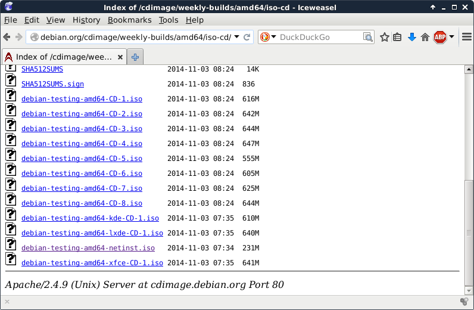
You have many other options to download and install Debian. We will
discuss them much later.
This small screenshot shows the downloading of a netinst .iso file.
Most of the software will be downloaded during the installation. This
also means that you will have the most recent version of all packages
when the install is finished.
I already have Debian 8 installed on my laptop (hence the paul@debian8
prompt). Anyway, this is the downloaded file just before starting the
installation.
paul@debian8:~$ ls -hl debian-testing-amd64-netinst.iso
-rw-r--r-- 1 paul paul 231M Nov 10 17:59 debian-testing-amd64-netinst.iso
Create a new virtualbox machine (I already have five, you might have
zero for now). Click the New button to start a wizard that will help
you create a virtual machine.
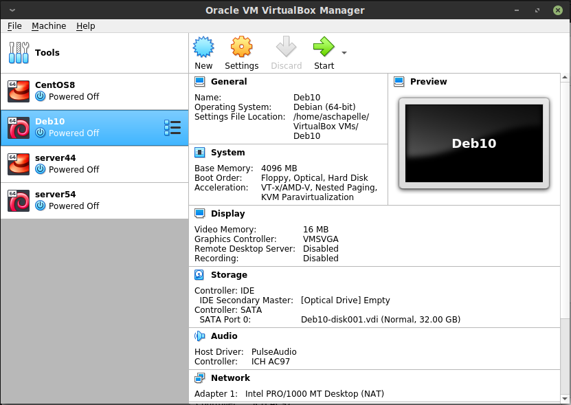
The machine needs a name, this screenshot shows that I named it
server42.
Most of the defaults in Virtualbox are ok.
512MB of RAM is enough to practice all the topics in this book.

We do not care about the virtual disk format.
Choosing dynamically allocated will save you some disk space (for a
small performance hit).
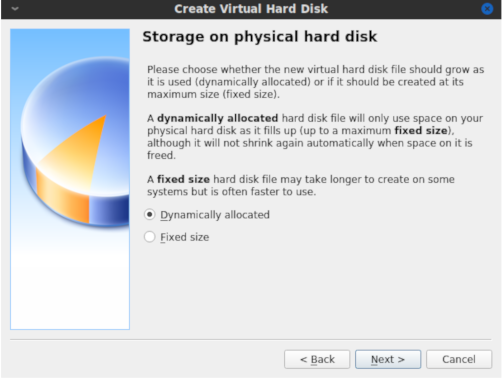
8GB should be plenty for learning about Linux servers.
This finishes the wizard. You virtual machine is almost ready to begin the installation.
First, make sure that you attach the downloaded .iso image to the
virtual CD drive. (by opening Settings, Storage followed by a mouse
click on the round CD icon)
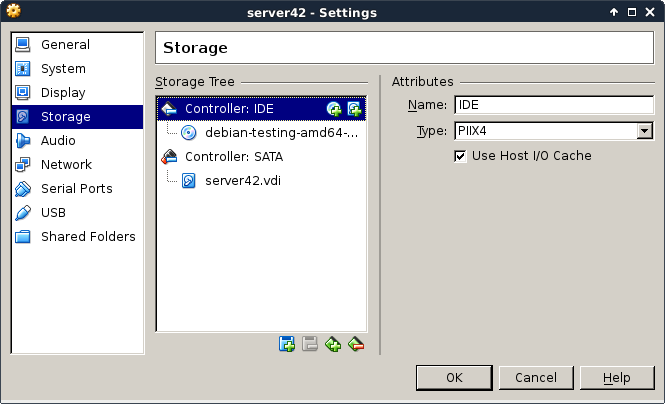
Personally I also disable sound and usb, because I never use these features. I also remove the floppy disk and use a PS/2 mouse pointer. This is probably not very important, but I like the idea that it saves some resources.
Now boot the virtual machine and begin the actual installation. After a
couple of seconds you should see a screen similar to this. Choose
Install to begin the installation of Debian.
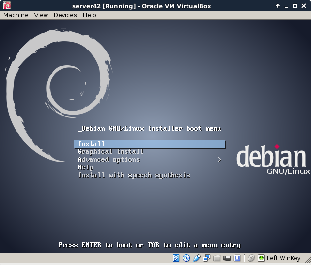
First select the language you want to use.
Choose your country. This information will be used to suggest a download mirror.
Choose the correct keyboard. On servers this is of no importance since
most servers are remotely managed via ssh.
Enter a hostname (with fqdn to set a dnsdomainname).
Give the root user a password. Remember this password (or use
hunter2).
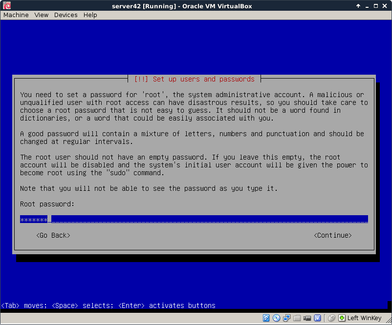
It is adviced to also create a normal user account. I don\'t give my
full name, Debian 8 accepts an identical username and full name paul.
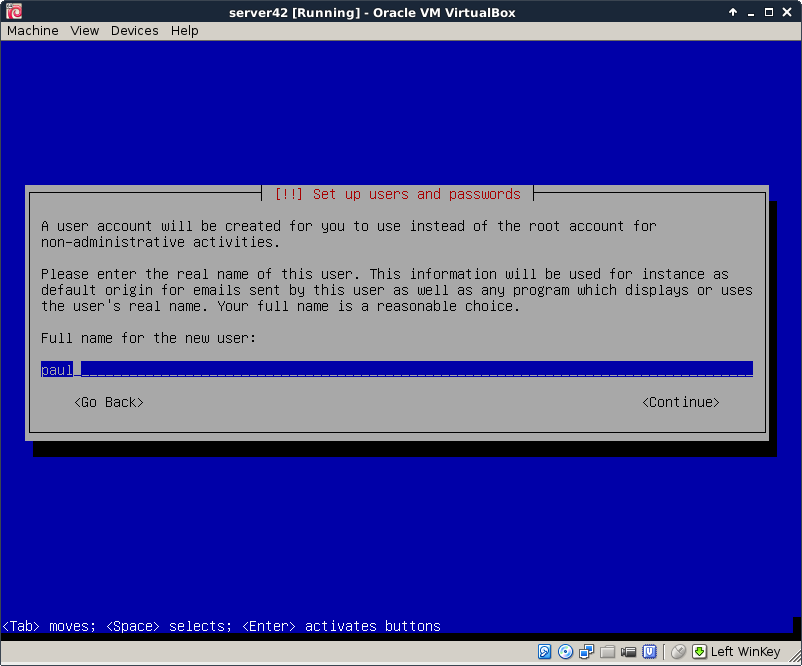
The use entire disk refers to the virtual disk that you created
before in Virtualbox..
Again the default is probably what you want. Only change partitioning if you really know what you are doing.
Accept the partition layout (again only change if you really know what you are doing).
This is the point of no return, the magical moment where pressing yes
will forever erase data on the (virtual) computer.
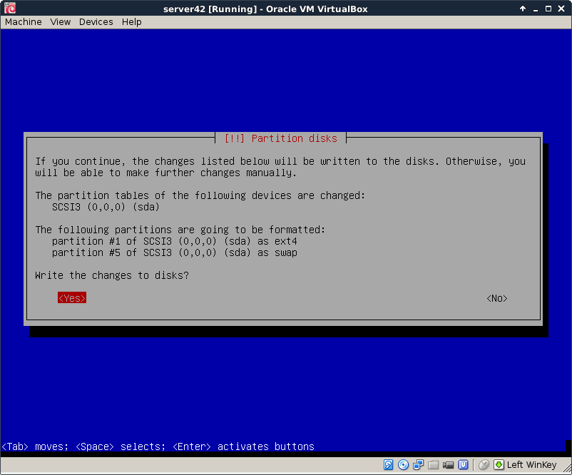
Software is downloaded from a mirror repository, preferably choose one that is close by (as in the same country).
This setup was done in Belgium.
Leave the proxy field empty (unless you are sure that you are behind a proxy server).
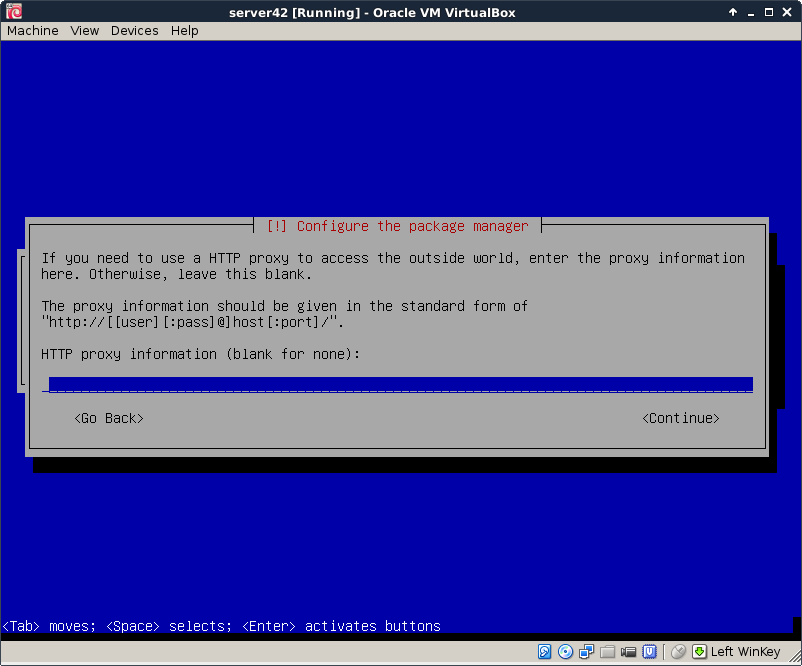
Choose whether you want to send anonymous statistics to the Debian
project (it gathers data about installed packages). You can view the
statistics here http://popcon.debian.org/.
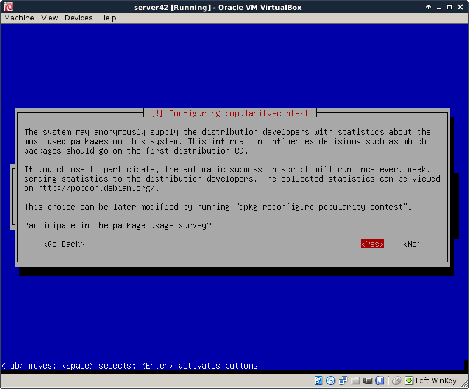
Choose what software to install, we do not need any graphical stuff for this training.
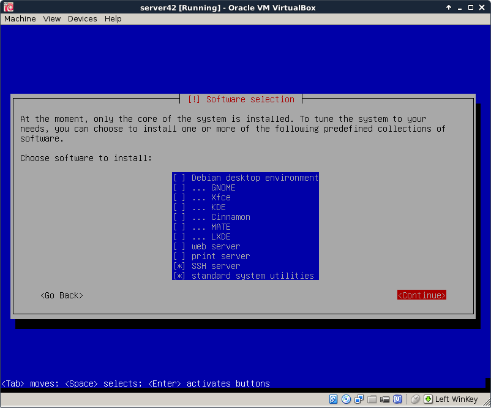
The latest versions are being downloaded.
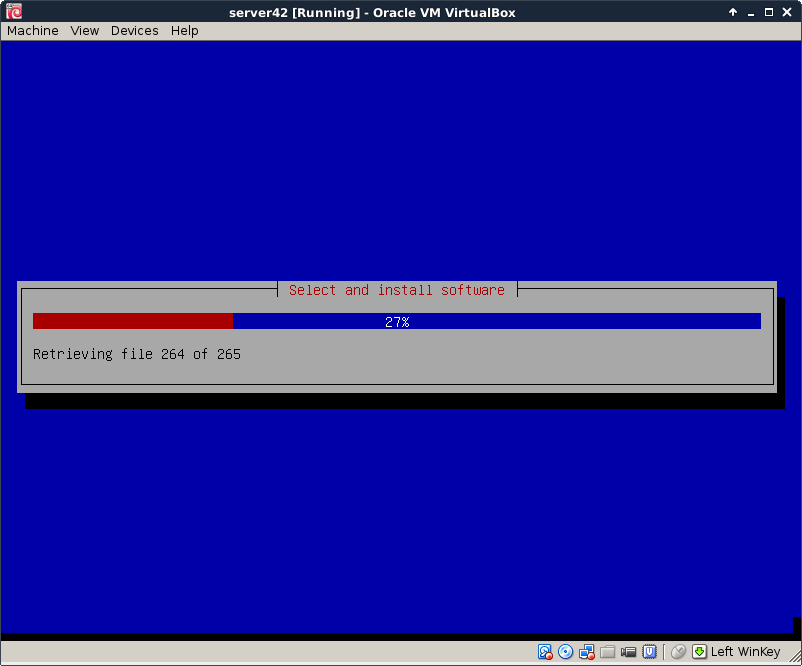
Say yes to install the bootloader on the virtual machine.
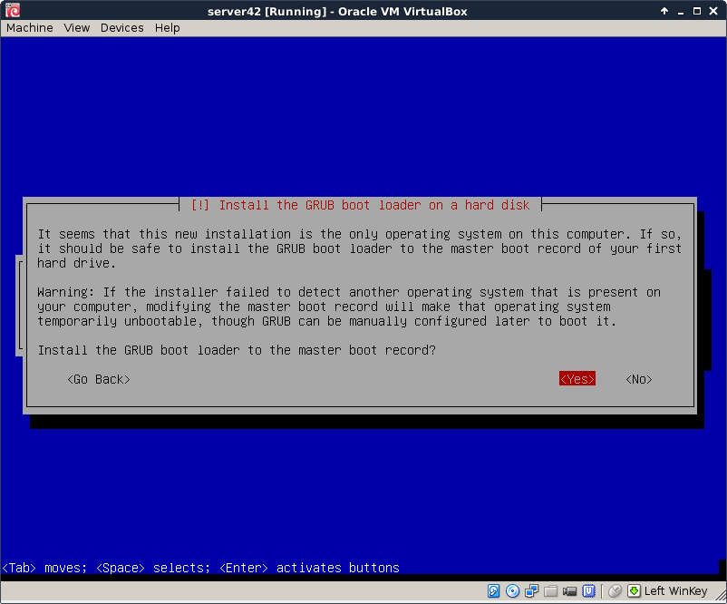
Booting for the first time shows the grub screen
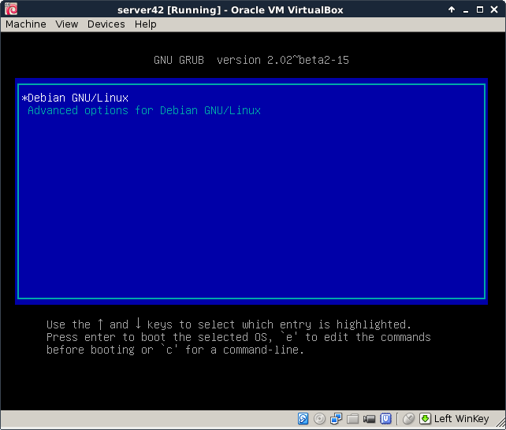
A couple seconds later you should see a lot of text scrolling of the
screen (dmesg). After which you are presented with this getty and
are allowed your first logon.
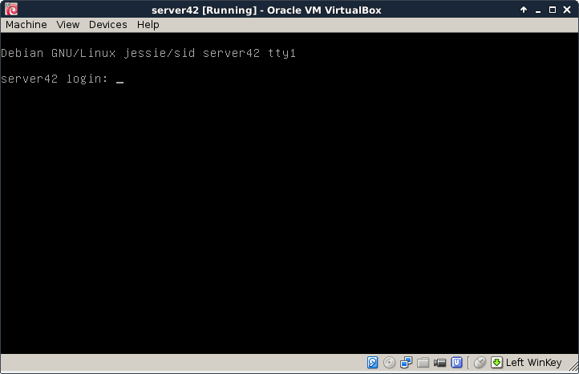
You should now be able to log on to your virtual machine with the root
account. Do you remember the password ? Was it hunter2 ?
The screenshots in this book will look like this from now on. You can just type those commands in the terminal (after you logged on).
root@server42:~# who am i
root tty1 2014-11-10 18:21
root@server42:~# hostname
server42
root@server42:~# date
Mon Nov 10 18:21:56 CET 2014
virtualbox networking
You can also log on from remote (or from your Windows/Mac/Linux host
computer) using ssh or putty. Change the network settings in the
virtual machine to bridge. This will enable your virtual machine to
receive an ip address from your local dhcp server.
The default virtualbox networking is to attach virtual network cards to
nat. This screenshiot shows the ip address 10.0.2.15 when on nat:
root@server42:~# ifconfig
eth0 Link encap:Ethernet HWaddr 08:00:27:f5:74:cf
inet addr:10.0.2.15 Bcast:10.0.2.255 Mask:255.255.255.0
inet6 addr: fe80::a00:27ff:fef5:74cf/64 Scope:Link
UP BROADCAST RUNNING MULTICAST MTU:1500 Metric:1
RX packets:11 errors:0 dropped:0 overruns:0 frame:0
TX packets:19 errors:0 dropped:0 overruns:0 carrier:0
collisions:0 txqueuelen:1000
RX bytes:2352 (2.2 KiB) TX bytes:1988 (1.9 KiB)
lo Link encap:Local Loopback
inet addr:127.0.0.1 Mask:255.0.0.0
inet6 addr: ::1/128 Scope:Host
UP LOOPBACK RUNNING MTU:65536 Metric:1
RX packets:0 errors:0 dropped:0 overruns:0 frame:0
TX packets:0 errors:0 dropped:0 overruns:0 carrier:0
collisions:0 txqueuelen:0
RX bytes:0 (0.0 B) TX bytes:0 (0.0 B)
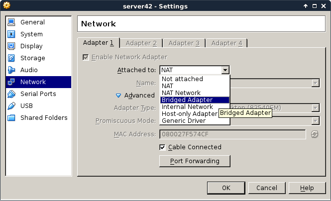
By shutting down the network interface and enabling it again, we force Debian to renew an ip address from the bridged network.
root@server42:~# # do not run ifdown while connected over ssh!
root@server42:~# ifdown eth0
Killed old client process
Internet Systems Consortium DHCP Client 4.3.1
Copyright 2004-2014 Internet Systems Consortium.
All rights reserved.
For info, please visit https://www.isc.org/software/dhcp/
Listening on LPF/eth0/08:00:27:f5:74:cf
Sending on LPF/eth0/08:00:27:f5:74:cf
Sending on Socket/fallback
DHCPRELEASE on eth0 to 10.0.2.2 port 67
root@server42:~# # now enable bridge in virtualbox settings
root@server42:~# ifup eth0
Internet Systems Consortium DHCP Client 4.3.1
Copyright 2004-2014 Internet Systems Consortium.
All rights reserved.
For info, please visit https://www.isc.org/software/dhcp/
Listening on LPF/eth0/08:00:27:f5:74:cf
Sending on LPF/eth0/08:00:27:f5:74:cf
Sending on Socket/fallback
DHCPDISCOVER on eth0 to 255.255.255.255 port 67 interval 8
DHCPDISCOVER on eth0 to 255.255.255.255 port 67 interval 8
DHCPREQUEST on eth0 to 255.255.255.255 port 67
DHCPOFFER from 192.168.1.42
DHCPACK from 192.168.1.42
bound to 192.168.1.111 -- renewal in 2938 seconds.
root@server42:~# ifconfig eth0
eth0 Link encap:Ethernet HWaddr 08:00:27:f5:74:cf
inet addr:192.168.1.111 Bcast:192.168.1.255 Mask:255.255.255.0
inet6 addr: fe80::a00:27ff:fef5:74cf/64 Scope:Link
UP BROADCAST RUNNING MULTICAST MTU:1500 Metric:1
RX packets:15 errors:0 dropped:0 overruns:0 frame:0
TX packets:31 errors:0 dropped:0 overruns:0 carrier:0
collisions:0 txqueuelen:1000
RX bytes:3156 (3.0 KiB) TX bytes:3722 (3.6 KiB)
root@server42:~#
Here is an example of ssh to this freshly installed computer. Note
that Debian 8 has disabled remote root access, so i need to use the
normal user account.
paul@debian8:~$ ssh paul@192.168.1.111
paul@192.168.1.111's password:
The programs included with the Debian GNU/Linux system are free software;
the exact distribution terms for each program are described in the
individual files in /usr/share/doc/*/copyright.
Debian GNU/Linux comes with ABSOLUTELY NO WARRANTY, to the extent
permitted by applicable law.
paul@server42:~$
paul@server42:~$ su -
Password:
root@server42:~#
TODO: putty screenshot here...
setting the hostname
The hostname of the server is asked during installation, so there is no need to configure this manually.
root@server42:~# hostname
server42
root@server42:~# cat /etc/hostname
server42
root@server42:~# dnsdomainname
paul.local
root@server42:~# grep server42 /etc/hosts
127.0.1.1 server42.paul.local server42
root@server42:~#
adding a static ip address
This example shows how to add a static ip address to your server.
You can use ifconfig to set a static address that is active until the
next reboot (or until the next ifdown).
a
root@server42:~# ifconfig eth0:0 10.104.33.39
Adding a couple of lines to the /etc/network/interfaces file to enable
an extra ip address forever.
root@server42:~# vi /etc/network/interfaces
root@server42:~# tail -4 /etc/network/interfaces
auto eth0:0
iface eth0:0 inet static
address 10.104.33.39
netmask 255.255.0.0
root@server42:~# ifconfig
eth0 Link encap:Ethernet HWaddr 08:00:27:f5:74:cf
inet addr:192.168.1.111 Bcast:192.168.1.255 Mask:255.255.255.0
inet6 addr: fe80::a00:27ff:fef5:74cf/64 Scope:Link
UP BROADCAST RUNNING MULTICAST MTU:1500 Metric:1
RX packets:528 errors:0 dropped:0 overruns:0 frame:0
TX packets:333 errors:0 dropped:0 overruns:0 carrier:0
collisions:0 txqueuelen:1000
RX bytes:45429 (44.3 KiB) TX bytes:48763 (47.6 KiB)
eth0:0 Link encap:Ethernet HWaddr 08:00:27:f5:74:cf
inet addr:10.104.33.39 Bcast:10.255.255.255 Mask:255.0.0.0
UP BROADCAST RUNNING MULTICAST MTU:1500 Metric:1
lo Link encap:Local Loopback
inet addr:127.0.0.1 Mask:255.0.0.0
inet6 addr: ::1/128 Scope:Host
UP LOOPBACK RUNNING MTU:65536 Metric:1
RX packets:0 errors:0 dropped:0 overruns:0 frame:0
TX packets:0 errors:0 dropped:0 overruns:0 carrier:0
collisions:0 txqueuelen:0
RX bytes:0 (0.0 B) TX bytes:0 (0.0 B)
root@server42:~#
Debian package management
To get all information about the newest packages form the online repository:
root@server42:~# aptitude update
Get: 1 http://ftp.be.debian.org jessie InRelease [191 kB]
Get: 2 http://security.debian.org jessie/updates InRelease [84.1 kB]
Get: 3 http://ftp.be.debian.org jessie-updates InRelease [117 kB]
Get: 4 http://ftp.be.debian.org jessie-backports InRelease [118 kB]
Get: 5 http://security.debian.org jessie/updates/main Sources [14 B]
Get: 6 http://ftp.be.debian.org jessie/main Sources/DiffIndex [7,876 B]
... (output truncated)
To download and apply all updates for all installed packages:
root@server42:~# aptitude upgrade
Resolving dependencies...
The following NEW packages will be installed:
firmware-linux-free{a} irqbalance{a} libnuma1{a} linux-image-3.16.0-4-amd64{a}
The following packages will be upgraded:
busybox file libc-bin libc6 libexpat1 libmagic1 libpaper-utils libpaper1 libsqlite3-0
linux-image-amd64 locales multiarch-support
12 packages upgraded, 4 newly installed, 0 to remove and 0 not upgraded.
Need to get 44.9 MB of archives. After unpacking 161 MB will be used.
Do you want to continue? [Y/n/?]
... (output truncated)
To install new software (vim and tmux in this example):
root@server42:~# aptitude install vim tmux
The following NEW packages will be installed:
tmux vim vim-runtime{a}
0 packages upgraded, 3 newly installed, 0 to remove and 0 not upgraded.
Need to get 6,243 kB of archives. After unpacking 29.0 MB will be used.
Do you want to continue? [Y/n/?]
Get: 1 http://ftp.be.debian.org/debian/ jessie/main tmux amd64 1.9-6 [245 kB]
Get: 2 http://ftp.be.debian.org/debian/ jessie/main vim-runtime all 2:7.4.488-1 [5,046 kB]
Get: 3 http://ftp.be.debian.org/debian/ jessie/main vim amd64 2:7.4.488-1 [952 kB]
Refer to the package management chapter in LinuxAdm.pdf for more
information.